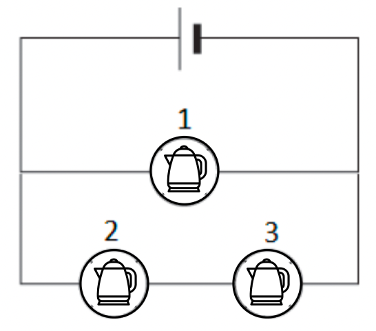

קומקום חשמלי מחובר למקור מתח קבוע שהכא"מ שלו \(\epsilon = 220V\) והתנגדותו הפנימית \(r = 5\Omega\).
הקומקום מרתיח \(200\) מ"ל של מים ב-\(2\) וחצי דקות, מטמפרטורת החדר (\(25\) מעלות צלזיוס) ועד לרתיחה (\(100\) מעלות).
בנוסף ידוע כי הקומקום יכול לעמוד רק בזרמים הנמוכים מ-\(4\) אמפר.
ידוע כי על מנת להרתיח ליטר מים במעלת צלזיוס אחת יש להשקיע אנרגיה של \(4186\) ג'אול.
א.הסבירו את פירוש המשפט "הכא"מ של מקור המתח הוא \(220\) וולט". בתשובה מלאה מצופה כי תהיה התייחסות למושגים: אנרגיה, עבודה, מטען, מתח/פוטנציאל, והדקי הסוללה.
(\(5.33\) נקודות)
ב.(1) חשבו את כמות האנרגיה שיש להשקיע כדי לחמם את המים שבקומקום מטמפרטורת החדר לרתיחה. (\(3\) נקודות)
(2)חשבו מתוך הנתונים את ההספק של הקומקום החשמלי, את עוצמת הזרם שזורם בו ואת התנגדותו. הניחו כי מלוא ההספק מנוצל לחימום המים. (\(7\) נקודות)
נתון מצב בו שלושה קומקומים בעלי התנגדות זהה מחוברים למקור המתח במעגל חשמלי כמתואר באיור. בכל אחד מהם ממלאים \(200\) מ"ל מים בטמפרטורת החדר.

ג.האם הזמן שיקח למים בקומקום מספר \(1\) לרתוח יהיה גדול מ-\(2.5\) דקות, קטן מ-\(2.5\) דקות או בדיוק \(2.5\) דקות? נמקו! (\(7\) נקודות)
ד.חשבו את הזמן שיקח למים בקומקום מספר \(2\) לרתוח ל-\(100\) מעלות. (\(6\) נקודות)
ה.האם נצילות המעגל גדולה יותר כאשר מחובר קומקום אחד או כאשר מחוברים שלושת הקומקומים? הסבירו! (\(5\) נקודות)